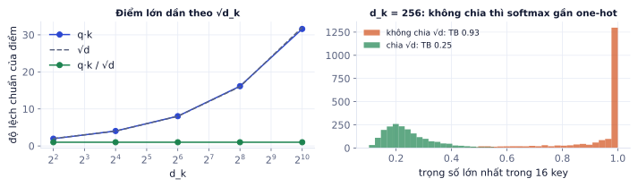
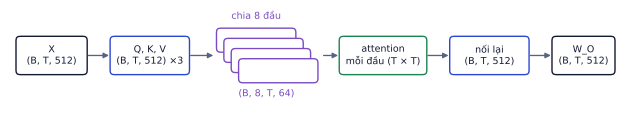
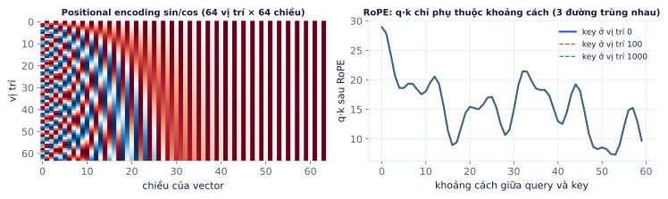
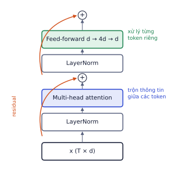

Attention là ý tưởng quan trọng nhất của AI hiện đại: mọi LLM, model sinh ảnh như FLUX, và hầu hết model thị giác đều xây trên nó. Bài này dựng Transformer từ từng mảnh nhỏ: query, key, value, rồi multi-head, mask, vị trí, và cả block hoàn chỉnh. Mỗi mảnh có ví dụ tính tay và code kiểm chứng. Sau bài này bạn tự cài được attention bằng vài dòng PyTorch.
Ý tưởng: mỗi token hỏi, mọi token trả lời
Vì sao cần học
Sau embedding (P3.1), mỗi token có một vector riêng nhưng chưa biết gì về ngữ cảnh: "nó" trong "con mèo… nó" và "cái bàn… nó" có cùng vector. Attention là cơ chế để mỗi token lấy thông tin từ các token khác và cập nhật vector của mình theo ngữ cảnh.
Trong câu "Con mèo ngồi trên tấm thảm vì nó mềm", để hiểu "nó" ta cần nhìn lại "thảm" (mềm là tính chất của thảm, không phải mèo). Attention cho mỗi token một cách tra cứu thông tin từ mọi token khác, giống tìm kiếm trong một từ điển mềm:
Vai trò
Câu hỏi
Ví dụ với "nó"
Query (q)
token hiện tại đang tìm gì?
"tôi là đại từ, tôi tìm danh từ mà tôi thay thế"
Key (k)
mỗi token mô tả mình có gì?
"thảm": "tôi là danh từ, đồ vật"
Value (v)
nội dung token đưa ra nếu được chọn
thông tin về "thảm"
Ba vector này là ba phép chiếu tuyến tính khác nhau, học được của cùng embedding:
Q = X · W_Q K = X · W_K V = X · W_V
X: (T, d_model) W_Q, W_K, W_V: (d_model, d_k) Q, K, V: (T, d_k)
Tách key và value cho phép một token "quảng cáo" mình theo một cách (key) nhưng đóng góp nội dung theo cách khác (value).
Scaled dot-product attention
Vì sao cần học
Đây là công thức trung tâm của toàn bộ P3–P9. Hiểu từng bước của nó thì đọc được mọi biến thể (multi-head, causal, cross-attention, FlashAttention).
Attention(Q, K, V) = softmax( Q·Kᵀ / √d_k ) · V
Bốn bước:
Q·Kᵀ cho ma trận điểm shape (T, T): ô (i, j) là tích vô hướng giữa query của token i và key của token j, đo "token j liên quan tới token i bao nhiêu".
Chia √d_k để giữ thang đo (giải thích ngay dưới).
Softmax theo hàng: mỗi token có một phân phối trọng số (tổng bằng 1) trên mọi token.
Nhân với V: đầu ra của mỗi token là trung bình có trọng số các value.
Nếu các thành phần của q và k độc lập, trung bình 0, phương sai 1, thì q·k là tổng của d_k số hạng, phương sai d_k, độ lệch chuẩn √d_k (P0.2: phương sai của tổng các biến độc lập cộng lại). Với d_k = 64, điểm có độ lệch chuẩn 8; với 512 thì khoảng 22.6.
Điểm lớn đưa vào softmax cho phân phối gần one-hot: một key chiếm gần hết trọng số, các key khác gần 0, và gradient qua softmax gần như bằng 0 ở mọi chỗ. Model học rất chậm. Chia √d_k đưa độ lệch chuẩn về khoảng 1.

Trái: đo thật, độ lệch chuẩn của q·k tăng đúng theo √d_k, chia √d_k đưa về 1. Phải: với d_k = 256 và 16 key, không chia thì trọng số lớn nhất trung bình 0.93 (gần one-hot); có chia thì 0.25.
Model sinh văn bản (GPT, Llama, Qwen) được train để đoán token tiếp theo. Nếu lúc train token thứ i nhìn thấy token i+1, nó chỉ cần "chép" đáp án, và sẽ vô dụng khi sinh thật (lúc đó tương lai chưa có).
Ta đặt điểm của các vị trí tương lai thành −∞ trước softmax. e^(−∞) = 0, nên trọng số của chúng bằng 0 đúng tuyệt đối, và tổng trọng số của các vị trí còn lại vẫn bằng 1.
T=8mask=torch.tril(torch.ones(T,T))# tam giác dưới: 1 = được nhìn, 0 = bị che
Trái: mask cho câu 8 token, hàng "nó" chỉ được nhìn 7 token tới chính nó. Phải: minh họa một đầu attention đã học dồn trọng số của "nó" vào "thảm" (số liệu minh họa, không phải từ model thật).
Nhờ mask, một lượt forward trên chuỗi T token cho ra T bài toán "đoán token tiếp theo" cùng lúc (mỗi vị trí đoán token sau nó), nên train rất hiệu quả. Đây là lý do LLM train nhanh hơn RNN nhiều.
Lỗi hay gặp
Mask bằng số 0 thay vì −∞. Đặt điểm tương lai bằng 0 (thay vì −∞) rồi softmax thì vị trí đó vẫn nhận trọng số e⁰ / tổng > 0: model vẫn nhìn trộm tương lai. Luôn dùng -inf (hoặc một số rất âm như −1e9) trước softmax.
Multi-head attention
Vì sao cần học
Một token cần nhiều loại thông tin cùng lúc: chủ ngữ của nó là gì, nó thay thế cho danh từ nào, token liền trước là gì. Một phân phối trọng số duy nhất không thể vừa nhìn chỗ này vừa nhìn chỗ kia. Nhiều đầu attention song song cho phép điều đó.
Multi-head chia d_model thành h đầu, mỗi đầu d_k = d_model / h chiều, chạy attention độc lập, rồi nối kết quả và chiếu qua W_O:
head_i = Attention(X·W_Qⁱ, X·W_Kⁱ, X·W_Vⁱ) mỗi đầu d_k = d_model / h
MultiHead(X) = Concat(head_1, …, head_h) · W_O

Shape qua từng bước với d_model = 512 và 8 đầu: mỗi đầu làm việc trên 64 chiều, có ma trận T × T của riêng nó.
Nghiên cứu các model đã train cho thấy các đầu chuyên môn hóa: có đầu nhìn token liền trước, có đầu theo quan hệ ngữ pháp, có đầu làm đồng tham chiếu.
Cài đặt hiệu quả: tính Q, K, V cho mọi đầu bằng một lớp Linear rồi view thành các đầu:
Đoạn code này cho kết quả khớp với torch.nn.functional.scaled_dot_product_attention của PyTorch tới sai số 10⁻⁷ (đã kiểm chứng). Trong code thật, dùng hàm có sẵn đó: nó gọi FlashAttention khi có thể, nhanh hơn và tiết kiệm bộ nhớ hơn nhiều.
Số tham số attention: 4 ma trận d_model × d_model (Q, K, V, O) cộng 4 vector bias, không phụ thuộc số đầu (chia nhiều đầu chỉ chia nhỏ cùng ma trận). Với d_model = 64: 4 × 64² + 4 × 64 = 16.640.
Vị trí: positional encoding và RoPE
Vì sao cần học
Attention chỉ nhìn tập hợp các vector, không có khái niệm thứ tự: "chó cắn người" và "người cắn chó" cho ra cùng tập vector đầu ra (chỉ đổi chỗ). Phải đưa thông tin vị trí vào, và cách đưa vào quyết định model xử lý được context dài tới đâu.
Ba cách chính:
Cách
Làm gì
Dùng ở
Sinusoidal
cộng vào embedding một vector sin/cos với nhiều tần số theo vị trí
Transformer gốc; time embedding trong Diffusion (P5)
Learned
một bảng embedding riêng cho mỗi vị trí 0..T_max
GPT-2, BERT; không dùng được quá T_max
RoPE
xoay q và k một góc tỉ lệ với vị trí trước khi tính q·k
RoPE chia vector thành từng cặp số, coi mỗi cặp là một điểm 2D và xoay nó một góc pos × θᵢ (mỗi cặp một tần số θᵢ khác nhau). Vì xoay q một góc a và k một góc b thì tích vô hướng chỉ phụ thuộc a − b, nên q·k chỉ phụ thuộc khoảng cách giữa hai token, không phụ thuộc vị trí tuyệt đối.

Trái: positional encoding sin/cos, chiều thấp dao động nhanh, chiều cao dao động chậm. Phải: đo thật, sau RoPE tích q·k của cùng cặp vector chỉ đổi theo khoảng cách; dời cả hai sang vị trí 100 hay 1.000 cho đúng cùng một đường.
Tính chất này giúp các kỹ thuật kéo dài context (P9.3) như "giãn" góc xoay hoạt động được: model train ở 4K token có thể dùng ở 32K token sau một ít fine-tune.
Block Transformer hoàn chỉnh
Vì sao cần học
Một LLM chỉ là embedding + N block giống hệt nhau + lớp đầu ra. Hiểu một block là hiểu toàn bộ kiến trúc; các model khác nhau chủ yếu ở N, d_model, và vài chi tiết nhỏ.
x = x + MultiHeadAttention(LayerNorm(x)) # trộn thông tin giữa các token
x = x + FeedForward(LayerNorm(x)) # xử lý từng token độc lập
FeedForward(x) = W₂ · GELU(W₁·x + b₁) + b₂ # W₁: d → 4d, W₂: 4d → d

Một block pre-norm: hai nhánh con, mỗi nhánh có LayerNorm trước và kết nối tắt cộng vào sau.
Residual (x + …) giúp gradient đi qua hàng chục block, như ResNet (P2.3).
LayerNorm chuẩn hóa theo chiều đặc trưng của từng token (khác BatchNorm chuẩn hóa theo batch), nên không phụ thuộc kích thước batch hay độ dài chuỗi. Kiểu "pre-norm" (LayerNorm đặt trước attention/FFN) ổn định hơn khi train sâu. LLM mới thường dùng RMSNorm, một biến thể đơn giản hơn.
Feed-forward chiếm khoảng 2/3 số tham số của block. Nhiều nghiên cứu cho thấy đây là nơi model "lưu kiến thức".
Ví dụ từng bước
Đếm tham số một block của GPT-2 small (d_model = 768, FFN 4d = 3.072):
Phần
Công thức
Tham số
Attention
4 × 768² + 4 × 768
2.362.368
Feed-forward
768 × 3072 + 3072 + 3072 × 768 + 768
4.722.432
2 LayerNorm
2 × 2 × 768
3.072
Một block
7.087.872
12 block ≈ 85 triệu, cộng embedding token (50.257 × 768 ≈ 38.6 triệu) và embedding vị trí (1.024 × 768 ≈ 0.8 triệu): tổng khoảng 124 triệu tham số, đúng con số công bố của GPT-2 small.
Encoder, decoder và encoder–decoder
Loại
Attention
Model
Hợp với
Encoder
hai chiều (mọi token nhìn mọi token)
BERT, PhoBERT
hiểu văn bản: phân loại, embedding, trích xuất
Decoder
causal (chỉ nhìn quá khứ)
GPT, Llama, Qwen
sinh văn bản, chat
Encoder–decoder
encoder hai chiều + decoder có cross-attention sang encoder
T5, Whisper, model dịch
biến chuỗi này thành chuỗi khác
Cross-attention: query lấy từ decoder, key và value lấy từ đầu ra encoder. Cùng cơ chế này đưa câu mô tả vào model sinh ảnh ở P5.
Ghi nhớ: attention trộn thông tin giữa các token, feed-forward biến đổi từng token. Chi phí attention tăng theo bình phương độ dài chuỗi: chuỗi dài gấp đôi thì ma trận điểm lớn gấp bốn.
Đào sâu thêm
Bộ nhớ của ma trận attention. Mỗi đầu cần một ma trận T × T. Với T = 2.048 ở fp16 (2 byte): 2.048² × 2 ≈ 8.4 MB mỗi đầu mỗi lớp; T = 8.192 thì 134 MB, gấp 16 lần. Nhân với số đầu, số lớp và batch, đây là lý do context dài từng rất đắt. FlashAttention tính attention theo từng khối nhỏ, không bao giờ lưu cả ma trận T × T vào bộ nhớ GPU, nên vừa nhanh hơn vừa dùng bộ nhớ tuyến tính theo T. Khi sinh văn bản, KV cache (P6.3) lưu lại K và V của các token đã có để không tính lại.
Tự kiểm tra nhanh
Một block có d_model = 256, FFN 4d.
Tóm tắt bài và thuật ngữ
Mảnh
Công thức / ý chính
Shape
Q, K, V
ba phép chiếu học được của X
(T, d_k)
Điểm
Q·Kᵀ / √d_k
(T, T)
Mask
−∞ cho tương lai trước softmax
(T, T)
Đầu ra một đầu
softmax(điểm)·V
(T, d_k)
Multi-head
h đầu song song, nối, W_O
(T, d_model)
Vị trí
sin/cos, learned, RoPE
Block
x + Attn(LN(x)); x + FFN(LN(x))
(T, d_model)
Thuật ngữ
Nghĩa
query / key / value
vector "tìm gì" / "có gì" / "đưa ra gì"
attention weights
phân phối trọng số sau softmax
self-attention
Q, K, V cùng từ một chuỗi
cross-attention
Q từ chuỗi này, K, V từ chuỗi khác
causal mask
che tương lai bằng −∞
multi-head attention
nhiều đầu attention song song
positional encoding
thông tin vị trí đưa vào model
RoPE
rotary position embedding, xoay q và k theo vị trí
LayerNorm / RMSNorm
chuẩn hóa theo chiều đặc trưng của từng token
feed-forward (MLP)
hai lớp Linear với GELU, xử lý từng token
pre-norm
LayerNorm đặt trước attention/FFN
encoder / decoder
attention hai chiều / causal
FlashAttention
cách tính attention không lưu cả ma trận T × T
Ô tự chấm đã giải đúng0 / 4
Bài 1
Attention cho 3 token
tính tay
d_k = 2. Q = K = [[1, 0], [0, 1], [1, 1]], V = [[1, 2], [3, 4], [5, 6]]. Tính đầu ra cho token đầu tiên (q = [1, 0]), không mask.
Gợi ý
q·k với ba key là [1, 0, 1]. Chia √2 ≈ 1.414. Softmax rồi lấy trung bình có trọng số các hàng của V.
Lời giải
Điểm [0.707, 0, 0.707]. e^0.707 ≈ 2.028, tổng 2.028 + 1 + 2.028 = 5.056. Trọng số [0.401, 0.198, 0.401]. Đầu ra = 0.401·[1, 2] + 0.198·[3, 4] + 0.401·[5, 6] = [3, 4]. Token 1 và 3 có trọng số bằng nhau nên trung bình của chúng (3, 4) trùng với value của token 2.
Bài 2
Causal mask
tính tay
Cùng dữ liệu, nhưng có causal mask. Đầu ra của token đầu tiên là gì?
Lời giải
Token đầu chỉ được nhìn chính nó, trọng số bằng 1, nên đầu ra là v₁ = [1, 2].
Bài 3
Đếm tham số một block
tính tay
d_model = 512, feed-forward 2048, có bias, 2 LayerNorm (mỗi cái có γ và β).
Lời giải
Attention: 4·512² + 4·512 = 1.050.624. FFN: 512·2048 + 2048 + 2048·512 + 512 = 2.099.712. LayerNorm: 2·(512 + 512) = 2048. Tổng 3.152.384. Feed-forward chiếm khoảng 2/3 tham số của mỗi block.
4096² ≈ 16,8 triệu phần tử mỗi đầu. Nhân 32 đầu và 2 byte: khoảng 1,07 GB cho một lớp, một mẫu. Đây là lý do FlashAttention ra đời: tính attention theo từng khối mà không lưu cả ma trận.
Bài 5
Vì sao chia √d_k
khái niệm
Giả sử các thành phần của q và k độc lập, trung bình 0, phương sai 1. Phương sai của q·k khi d_k = 64 là bao nhiêu? Điều gì xảy ra với softmax nếu không chia √d_k?
Lời giải
q·k là tổng 64 tích độc lập, mỗi tích có phương sai 1, nên phương sai là 64 (độ lệch chuẩn 8). Điểm cỡ ±8 đến ±16 làm softmax gần như one-hot: một token nhận gần hết trọng số, gradient của các token khác gần 0, train rất chậm. Chia √64 = 8 đưa phương sai về 1.
Lab 2: tự cài self-attention và multi-head attention
Các bước
Viết scaled_dot_product_attention(q, k, v, mask) như phần lý thuyết.
Viết lớp MultiHeadAttention(d_model, n_heads) với một nn.Linear(d_model, 3*d_model) cho Q, K, V và một nn.Linear(d_model, d_model) cho đầu ra. Tách đầu bằng view và transpose thành (B, h, T, d_k).
Hỗ trợ tham số causal=True dùng mask tam giác dưới.
Kiểm tra khớp PyTorch: chép trọng số sang nn.MultiheadAttention(d_model, n_heads, batch_first=True) (in_proj_weight, in_proj_bias, out_proj) và so đầu ra trên tensor ngẫu nhiên (2, 10, 64), có và không có causal mask.
Vẽ heatmap trọng số attention của từng đầu cho một câu ngắn sau khi qua model đã train ở Lab 3 (làm sau).
Xong khi
Sai số tuyệt đối lớn nhất so với nn.MultiheadAttention < 1e-5, cả có và không có causal mask.
Với causal mask, thay đổi token cuối không làm đổi đầu ra của các token trước (viết test cho điều này).
Code tham khảo
importtorch,torch.nnasnnclassMultiHeadAttention(nn.Module):def__init__(self,d_model,n_heads):super().__init__()assertd_model%n_heads==0self.h,self.dk=n_heads,d_model//n_headsself.qkv=nn.Linear(d_model,3*d_model)self.out=nn.Linear(d_model,d_model)defforward(self,x,causal=False):B,T,D=x.shapeq,k,v=self.qkv(x).split(D,dim=-1)q,k,v=[t.view(B,T,self.h,self.dk).transpose(1,2)fortin(q,k,v)]# (B, h, T, dk)scores=q@k.transpose(-2,-1)/self.dk**0.5ifcausal:mask=torch.tril(torch.ones(T,T,dtype=torch.bool,device=x.device))scores=scores.masked_fill(~mask,float("-inf"))y=torch.softmax(scores,dim=-1)@v# (B, h, T, dk)returnself.out(y.transpose(1,2).reshape(B,T,D))torch.manual_seed(0)ours,ref=MultiHeadAttention(64,8),nn.MultiheadAttention(64,8,batch_first=True)withtorch.no_grad():ref.in_proj_weight.copy_(ours.qkv.weight);ref.in_proj_bias.copy_(ours.qkv.bias)ref.out_proj.weight.copy_(ours.out.weight);ref.out_proj.bias.copy_(ours.out.bias)x=torch.randn(2,10,64)causal=torch.triu(torch.ones(10,10,dtype=torch.bool),diagonal=1)# True = bị che (quy ước của PyTorch)print((ours(x)-ref(x,x,x,need_weights=False)[0]).abs().max())print((ours(x,causal=True)-ref(x,x,x,attn_mask=causal,need_weights=False)[0]).abs().max())
Xong bài khiSai số so với PyTorch < 1e-5, có hỗ trợ causal mask.